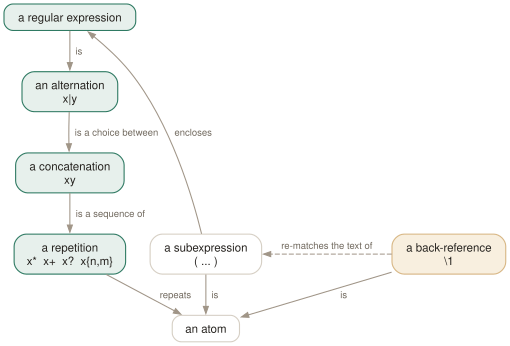

Day 04
Matching many
Repetition, alternation, precedence — and the three dialects that spell them differently.
By the end of today you can
- translate any pattern between basic and extended syntax without trial and error
- predict which of two overlapping alternatives grep will report, and why
-Pdisagrees - reach for
-Fautomatically whenever the pattern came from a variable
One language, three notations, and a fourth that is not a language
Yesterday was “one character”. Today is everything built on top: repeat it, put two of them in a row, offer a choice. The operators are the same handful you already half-know; what trips people up is that grep spells them three different ways and defaults to the least convenient one.
The manual is unusually direct about this: “In GNU grep, basic and extended regular expressions are merely different notations for the same pattern-matching functionality.” -G and -E are not more and less powerful. They differ in exactly which characters need a backslash, and the difference runs the wrong way from every other tool you use.

| binds loosest, then juxtaposition, then the repetition operators, then a single atom. abc|d is therefore (abc)|(d) and never ab(c|d). Parentheses are the only rung that lets a whole expression become an atom again — which is why they are the only way to make | bind tighter than concatenation.The precedence ladder
Repetition binds tightest, then concatenation, then alternation. That single sentence resolves most regex surprises, and the worked example is worth memorising:
$ echo abc | grep -oE '^ab|bc$'
ab
That pattern is (^ab)|(bc$), not ^a(b|b)c$. The alternation swallowed everything on both sides of it, including the anchors. If you meant the other thing, parenthesise: '^a(b|d)c$'.
x*- Zero or more. Greedy — it takes as much as it can while still letting the rest of the pattern match.
x?- At most one.
x+- One or more.
x{3}- Exactly three.
x{2,}- Two or more.
x{,4}- At most four. This one is a GNU extension — POSIX has no such form, so it is not portable.
x{2,4}- Between two and four.
Leftmost-longest: the rule that surprises everyone
POSIX regular expressions do not try your alternatives in order. Among all matches beginning at the earliest position in the line, the engine returns the longest one. Ordering is not a tiebreaker; it carries no meaning.
$ echo abcd | grep -oE 'ab|abcd'
abcd
$ echo abcd | grep -oP 'ab|abcd'
ab
Translating between the dialects
Six characters change meaning between the two notations, and nothing else does. In extended syntax ? + { | ( ) are operators; in basic syntax they are literal text, and the operators are \? \+ \{ \| \( \). The backslash inverts the meaning rather than removing it.
Extended — grep -E
colou?r
(cat|dog)s?
^[0-9]{1,3}\.[0-9]{1,3}$
(ab)+c
Basic — grep (the default)
colou\?r
\(cat\|dog\)s\?
^[0-9]\{1,3\}\.[0-9]\{1,3\}$
\(ab\)\+c
Note that *, ., ^, $ and bracket expressions are identical in both, which is why so many people get away with never learning the distinction. Back-references are \1 in both — and GNU accepts them in extended syntax too, although POSIX does not require it.
The matcher that is not a regex at all
-F turns the pattern language off. Every pattern is a literal string; . is a full stop and * is an asterisk. It is also the fastest matcher grep has, because a set of fixed strings can go through Commentz-Walter rather than a general automaton.
$ printf 'a.c\nabc\n' | grep -F 'a.c'
a.c
$ grep -E -F pattern file
grep: conflicting matchers specified
The rule worth adopting: if the pattern came from a variable, it gets -F. User input, a filename, a version string, a value read out of JSON — none of those were written as regular expressions, and passing them as regular expressions is how you get both false positives and hard exits on a stray bracket.
Today's habit
Two rules, and they cover most of what goes wrong: reach for -E by reflex, and reach for -F whenever the pattern is data rather than something you typed.
# ~/grep-recipes.sh
#
# Day 4: a pattern that came from a variable is DATA, not a regex.
grep -F -- "$needle" file # -F for the metacharacters, -- for a leading dash
# Day 4: doubled words in prose. Interactive only - back-references
# take grep off its linear-time path (see BUGS in man grep).
grep -nE '\b([a-z]+) \1\b' *.md
New vocabulary
Options
| Option | Does |
|---|---|
* | Zero or more of the preceding item. The only repetition operator BRE spells the same way. |
? and + | At most one, and at least one. In BRE you must write \? and \+. |
{n,m} | Between n and m times. {,m} with no lower bound is a GNU extension. |
| | Alternation, and the loosest-binding operator there is. BRE spells it \|. |
(...) | Group, to override precedence. BRE spells it \(...\). |
\1 … \9 | Re-match the exact text the nth group captured. Slow, and worth avoiding. |
-E, --extended-regexp | Extended syntax: the operators above are bare. What you usually want. |
-G, --basic-regexp | Basic syntax: ? + { | ( ) need backslashes. The default. |
-F, --fixed-strings | No regex at all. Every pattern is a literal string, and it is the fastest matcher. |
Drillsdo these in a real terminal, today
Self-check
Answer out loud first, then unfold.
You write grep -E 'ab|abcd' with -o over the line abcd and get abcd, even though ab is listed first and matches at the same place. Is grep ignoring your ordering?
It is ignoring it deliberately. POSIX regular expressions are leftmost-longest: among all matches starting at the earliest possible position, the engine returns the longest. The order of the alternatives carries no information at all.
Perl-compatible expressions are leftmost-first instead — they try the alternatives in order and take the first that succeeds — so grep -oP 'ab|abcd' on the same line prints ab. If you have ever ported a pattern from a scripting language and watched it match more than it used to, this is why. Day 10 returns to it.
A script does grep "$user_input" data.txt. A user types a.* and gets the whole file; another types [ and the script exits 2. What is the fix, and why is escaping the input not it?
The fix is grep -F -- "$user_input" data.txt. -F says the pattern is a literal string, so a.* matches the three characters a.* and [ matches a bracket. The -- separately stops an input beginning with - from being read as an option.
Escaping is not the fix because there is no correct escaping function you can write in shell: the set of metacharacters differs between BRE, ERE and PCRE, and [ opens a construct rather than being a self-contained character. -F removes the problem instead of trying to sanitise it, and as a bonus it is the fastest matcher grep has.
In basic syntax grep 'a+b' finds the literal text a+b. So why does grep 'a{b' also find the literal text a{b, when { is supposedly reserved?
The two are literals for different reasons. + is unconditionally a literal in BRE — the operator is spelled \+. { is a literal here only because {b is not a well-formed interval; GNU grep falls back to treating an unparseable brace as ordinary text rather than erroring.
POSIX leaves that case undefined, so it is a GNU kindness you should not lean on. It also means a typo inside an interval — a{2,x} — silently becomes a literal search instead of the error you would prefer. If you mean a brace, bracket it: [{].
Why does the manual's BUGS section single out back-references as “very slow, and may require exponential time”, when .* is also unbounded?
Because they take grep off its fast path. Without back-references a POSIX regular expression can be compiled to a deterministic automaton and matched in time linear in the input, whichever way it is written. A back-reference is not a regular language at all — the engine has to remember what group 1 actually captured and re-check it — so grep falls back to backtracking, where a pattern like (a+)+b can explore exponentially many splits.
The practical rule: back-references are fine interactively on a file you can see the end of, and do not belong in anything that runs unattended over input you do not control. The same paragraph warns that large {n,m} counts can eat memory, for the related reason that the automaton is built by expansion.
Cheat sheet
# precedence, loosest first: | then juxtaposition then * + ? {n,m}
# 'abc|d' is '(abc)|(d)' - () is the only way to change this
# POSIX is LEFTMOST-LONGEST: 'ab|abcd' on abcd gives abcd, order is ignored
# -P is leftmost-FIRST and gives ab. Same pattern, different answer.
# extended (-E) basic (-G, the default)
# optional colou?r colou\?r
# one-or-more (ab)+c \(ab\)\+c
# alternate (cat|dog) \(cat\|dog\)
# interval x{1,3} x{,3}=GNU x\{1,3\}
# . * ^ $ [...] \1 are spelled the SAME in both
-F pattern is a literal string, and the fastest matcher. Use it whenever
the pattern came from a variable. Two matcher flags = exit 2, not last-wins.
Everything through Day 04
Commands
| Command | Does |
|---|---|
grep root /etc/passwd | Search one named file. No filename prefix on the output. |
grep root /etc/passwd /etc/group | Search several. Output gains a file: prefix automatically. |
grep root | No file operand: read standard input. From a terminal, this waits for you. |
grep -r root | No file operand and -r: search the working directory instead. |
cmd | grep root - | A file operand of - is standard input, mixable with real files. |
echo $? | Read the status grep just returned. The habit this whole day is about. |
grep -e -v file.txt | Search for the literal string -v. -e protects a pattern that starts with a dash. |
grep -f patterns.txt data.txt | Take patterns from a file, one per line. The workhorse for long lists. |
cut -f1 ids.csv | grep -f - data.txt | Patterns from a pipe. -f - reads them from standard input. |
Options
| Option | Does |
|---|---|
-V, --version | Print the version and exit. Know which grep you are actually running. |
--help | Print the option summary and exit. Shorter and better organised than the man page. |
-- | End of options. Everything after it is a pattern or a filename, never a flag. |
-i, --ignore-case | Match regardless of case. What counts as “the same letter” depends on the locale. |
--no-ignore-case | Cancel an earlier -i. The last of the two on the line wins. |
-v, --invert-match | Select the lines that did not match. Applied once, after all patterns. |
-w, --word-regexp | Require the matched substring to be bounded by non-word characters or line ends. |
-x, --line-regexp | Require the match to be the entire line. Silently overrides -w. |
-e PAT, --regexp=PAT | Add a pattern. Repeatable, and combinable with -f. |
-f FILE, --file=FILE | Add every line of FILE as a pattern. An empty file matches nothing at all. |
-y | Undocumented synonym for -i. In neither the man page nor --help, but 3.12 accepts it. |
. | Match any single character. Whether it matches an encoding error is unspecified. |
[abc] | Match one character from the list. |
[^abc] | Match one character not in the list. The ^ must come first. |
[a-d] | A range. In the C locale, ASCII order; elsewhere the standard says it is unspecified. |
[[:digit:]] | A named class. The outer brackets are yours, the inner ones are part of the name. |
^ and $ | Anchor to the start and end of a line. They match a position, not a character. |
\< and \> | Anchor to the start and end of a word. A GNU extension. |
\b and \B | Anchor at, and not at, a word edge. \b is either edge; \< is only the left. |
\w and \W | Shorthand for [_[:alnum:]] and [^_[:alnum:]]. Note the underscore. |
* | Zero or more of the preceding item. The only repetition operator BRE spells the same way. |
? and + | At most one, and at least one. In BRE you must write \? and \+. |
{n,m} | Between n and m times. {,m} with no lower bound is a GNU extension. |
| | Alternation, and the loosest-binding operator there is. BRE spells it \|. |
(...) | Group, to override precedence. BRE spells it \(...\). |
\1 … \9 | Re-match the exact text the nth group captured. Slow, and worth avoiding. |
-E, --extended-regexp | Extended syntax: the operators above are bare. What you usually want. |
-G, --basic-regexp | Basic syntax: ? + { | ( ) need backslashes. The default. |
-F, --fixed-strings | No regex at all. Every pattern is a literal string, and it is the fastest matcher. |